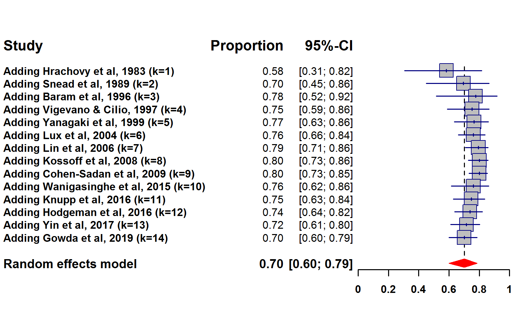
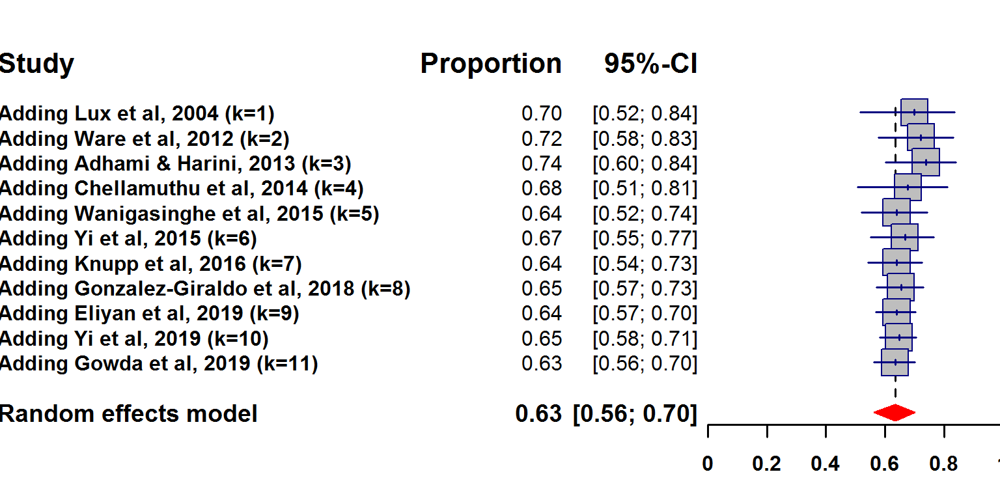
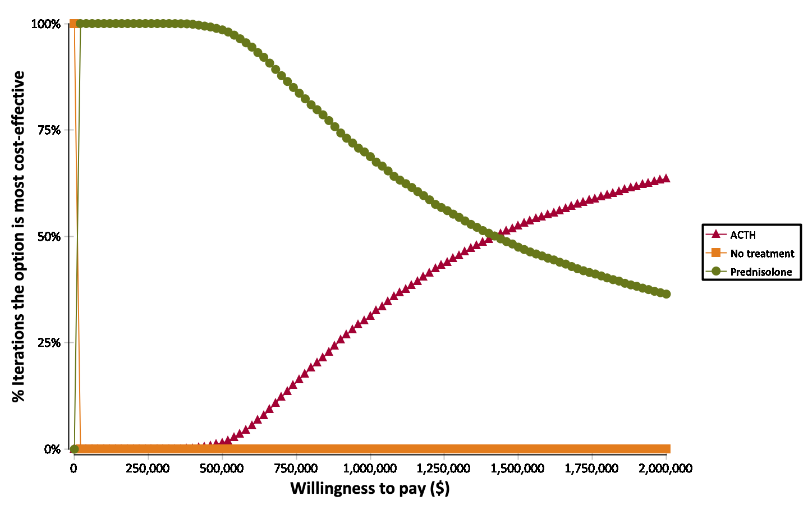

The objective of this presentation is to provide tools to make evidence-based decisions in the treatment of infantile spasms.
In particular, we will compare parenteral ACTH with oral prednisolone for resolution of clinical infantile spasms at day 14 after treatment initiation.
We will start with the historical evolution of evidence in this field
Then, we will review which studies are worth comparing
We will systematically compare effectiveness
Finally, we will systematically compare cost-effectiveness.
The early 2010s were great times for ACTH in the treatment of infantile spasms.
There were two old randomized clinical trials that appeared to show overwhelming superiority of
ACTH over oral steroids.
Hrachovy et al, 1983
showed that ACTH controlled 58.3% of cases, while prednisone only controlled 41.7% of cases.
Further, Baram et al, 1996
showed that ACTH controlled 86.7% of cases, while prednisone only controlled 28.6% of cases.
Who would put into question the results of two ancient randomized clinical trials? Everybody knows that the results of
randomized clinical trials are absolute truth, right?
In addition, all existing evidence until that point suggested a high effectiveness of ACTH (it controlled approximately
80% of cases).
In the early 2010s, the only evidence for oral prednisolone came from the
UKISS study (Lux et al, 2004)
which showed that prednisolone controlled 70% of cases, which was a much higher estimate than in prior studies.
However, in that same study, ACTH controlled 76% of cases.
At that point there was no other evidence regarding oral steroids for infantile spasms. Further, in 2012
the American Academy of Neurology and the Practice Committee of the Child Neurology Society published
an
evidence-based guideline on medical treatment of infantile spasms which concluded (appropriately
with the existing evidence at the time) that "there is insufficient evidence to determine whether
other forms of corticosteroids are as effective as ACTH for the short-term treatment of infantile spasms."
That was it. Everybody cited the "randomized clinical trials from the 1980s and 1990s"
(because randomized clinical trials are absolute truth, of course) and the AAN/CNS guidelines. There was no room
for discussion. The issue was settled: ACTH was better. For several generations, anybody who is now an attending was taught during
residency that ACTH was better. Not only that, but there was not even any doubt about that and up to
the early 2010s the evidence was growing bigger and bigger in favor of ACTH.
Yes, the pharmaceutical producing ACTH in the USA
increased the price by a factor of 14 (from $1650 per vial to $23 269 per vial) in
August 2007 and continued to increase prices abusively in the following years,
but ACTH was better and it was the price to pay for a better medication. Or was it?
Since the early 2010s, evidence showed that the effectiveness of ACTH was probably more around
70%.

Importantly, evidence mounted rapidly for prednisolone as a quite effective medication for infantile spasms.
Its efficacy was around 63%.

How was the effectiveness of oral steroids so different than that estimated in the randomized clinical
trials from the 1980s and 1990s (a.k.a. absolute truth)?
First, the doses of prednisone used in these trials
was very low:
2 mg/Kg/day in both Hrachovy et al, 1983 and
Baram et al, 1996.
Today we know that the treatment with oral steroids
was clearly underdosed.
Second, these randomized clinical trials were small with 12 patients in each arm in
Hrachovy et al, 1983 and
14 and 15 patients in Baram et al, 1996.
In contrast, the effectiveness of ACTH was
similar at low or high doses and also similar as synthetic ACTH or natural ACTH.
Current meta-analysis
considering only randomized clinical trials
fail to demonstrate a superiority of ACTH over prednisolone for infantile spasms.
A systematic review and meta-analysis
including 21 studies with a total of 968 patients showed no superiority of either ACTH or prednisolone for resolution of infantile spasms
at day 14 after treatment initiation, either considering all existing evidence or considering only randomized clinical trials.
There are some ideas floating around that if one considers hypsarrhythmia results would make ACTH better, but there is
poor interrater reliability
and we reviewed the evidence on that and there is
simply no evidence to sustain that idea
(there is not even evidence to perform a meta-analysis because results are very heterogeneous and inconsistent).
A systematic review, meta-analysis, and cost-effectiveness study
showed that the most cost-effective alternative was prednisolone with an incremental cost-effectiveness ratio (ICER) of $333 per case of spasms resolved, while the
ICER of ACTH was 1,432,200 per case of spasms resolved. After adjusting for publication bias ACTH would not be cost-effective at any willingness to pay because it
would be less effective and more costly than oral prednisolone.
On probabilistic sensitivity analysis, there was a marked overlap between the effectiveness of ACTH and prednisolone, but the cost of ACTH was 2-3 orders of
magnitude higher than prednisolone and the costs did not overlap at all. The acceptability curve showed that the more cost-effective choice was no treatment
for a willingness to pay of less than approximately $335 per case of spasms solved. For a willingness to pay between approximately $335 and 1,430,000 per case of
spasms solved, prednisolone was the most cost-effective option. Only for a willingness to pay above approximately $1,430,000 would ACTH be the most cost-effective
option.

The prospective registry "National Infantile Spasms Consortium" from the
Pediatric Epilepsy Research Consortium reported in their first study with 230 patients
(Knupp et al, 2016)
that ACTH was more effective (55%) than oral steroids (39%).
However, that theoretical superiority was not confirmed with the final analysis with 423 patients
(Grinspan et al, 2021)
which showed ACTH to be similarly effective than oral steroids (46% versus 44%).
That is, one of the main supports for the idea of superiority of ACTH was disproved by the same registry which initially suggested it.
The definition of effectiveness in the "National Infantile Spasms Consortium" is different than in other studies, but
probably more clinically relevant: An infant was free from treatment failure at 60 days if (1) no second treatment was
prescribed within 60 days, and (2) the infant was free of infantile spasms, beginning within 30 days of treatment initiation.
What nobody is talking about: The real outcome of interest is long-term.